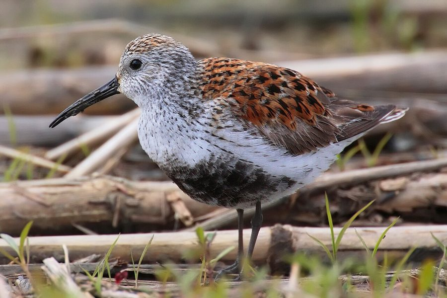

डनलिनDunlin
Calidris alpina · Scolopacidae · BRD-0306

- Scientific name वैज्ञानिक नाम
- Calidris alpina (Linnaeus, 1758)
- Family कुल
- Scolopacidae
- Hindi हिंदी
- डनलिन
- Local names स्थानीय नाम
- dunlin
- Status here यहाँ की स्थिति
- native
- Movement आवागमन
- Winter visitor
- Known from कहाँ दर्ज
- Others have published records from the Basti–Ayodhya districts बस्ती–अयोध्या के ज़िलों से दूसरों के प्रकाशित अभिलेख
- IUCN IUCN
- NT
- Review समीक्षा
- not yet reviewed
When to look कब देखें
Winter visitor शीतकालीन प्रवासी. Expected mainly in October, November, December, January, February, March. मुख्यतः अक्टूबर, नवंबर, दिसंबर, जनवरी, फ़रवरी, मार्च में अपेक्षित।
Breeds across high Arctic tundra; winters in small numbers along major river systems, oxbow lakes, and expansive silt margins across northern India from October through March. All migrants and visitors →
Tell it apart from इनसे अलग पहचानें
डनलिन / Dunlin
Calidris alpina (Linnaeus, 1758) — Scolopacidae
डनलिन — आर्कटिक टुंड्रा के सुदूर उत्तरी क्षेत्रों से जाड़ों में गंगा के मैदानी इलाकों में प्रवास करने वाला एक मध्यम आकार का जल-पक्षी है। यह सर्दियों में प्रमुख नदियों के रेतीले किनारों, दलदली झीलों और उथले कीचड़ वाले मैदानों पर कीड़े और छोटे घोंघे खोजते हुए दिखाई देता है। सर्दियों में इसका रंग मटमैला भूरा-सलेटी और पेट सफेद होता है, जबकि इसकी चोंच आगे की ओर हल्की सी नीचे मुड़ी होती है। यह वैश्विक स्तर पर संकटग्रस्त (Near Threatened) श्रेणी में दर्ज पक्षी है।
Quick Identification त्वरित पहचान
| Feature | Description |
|---|---|
| Habit | Medium-sized wader probing wet mud at water margins |
| Plumage (Winter) | Brownish-grey above with indistinct darker feather centres |
| Underparts (Winter) | White below, with diffuse greyish streaking on upper breast |
| Bill | Moderately long, black, stout at base and distinctly decurved near tip |
| Legs | Moderately short, dark olive-black or blackish |
| Flight | Distinct narrow white wingbar and dark central line down white rump |
| Posture | Somewhat hunched, probing rapidly with sewing-machine motion |
Field tip: In winter plumage, look for the distinctly drooped bill tip, slightly hunched feeding posture, and grey-brown upperparts without rufous tones. It feeds with rapid vertical probes in wet ooze.
हिंदी:
जाड़ों में इसका ऊपरी शरीर सलेटी-भूरा और पेट का हिस्सा पूरी तरह सफेद रहता है।
इसकी काली चोंच मध्यम लंबाई की होती है जो सिरे के पास नीचे की तरफ हल्की झुकी होती है।
यह कीचड़ में सिलाई मशीन की तरह तेजी से चोंच मारकर शिकार खोजती है।
Morphology आकारिकी
Measurements as given by Baker (1929 as Erolia alpina):
| Measurement | Range |
|---|---|
| Wing | 104–120 mm (Baker 1929) |
The Dunlin is a compact, stocky sandpiper with a bill slightly longer than its head that droops noticeably at the tip. In non-breeding winter plumage, the crown, hindneck, mantle, and scapulars are dull greyish-brown with fine dark shaft streaks and narrow paler margins. The lower plumage is mostly pure white, save for fine grey-brown streaks across the foreneck and upper breast.
The bill is black and slender, with sensitive nerve endings at the tip adapted for rhynchokinesis while probing saturated substrate. The iris is dark brown. The legs and feet are dull black or blackish-olive. In flight, it reveals a white wing stripe and white sides to the rump flanking a dark central stripe. Sexes are similar in non-breeding plumage.
Vocalisations. The flight call is a grating, nasal, slightly wheezy whistle, usually transcribed as treep or purre. Feeding flocks occasionally utter soft chattering notes.
हिंदी:
इसकी चोंच काली और सिर की तुलना में थोड़ी लंबी होती है, जिसका सिरा नीचे की ओर झुका रहता है।
छाती पर हल्की सलेटी धारियां और निचला पेट बिल्कुल सफेद होता है।
उड़ते समय इसके पंखों पर एक पतली सफेद पट्टी साफ दिखाई देती है।
Behaviour & Ecology व्यवहार और पारिस्थितिकी
Calidris alpina is a diurnal and crepuscular wader that feeds gregariously or singly along open mudflats. It employs a distinctive probing technique: walking forward deliberately while rhythmically thrusting its slightly open bill into soft mud to detect hidden invertebrate prey through tactile and pressure-sensitive pit receptors.
In northern Indian river valleys, it joins mixed flocks of small waders including stints and sandpipers. It prefers water margins where fine silt and shallow water meet, avoiding dense vegetation. When alarmed, flocks take flight simultaneously in rapid, coordinated aerial twists before wheeling back to an adjacent mudbank.
हिंदी:
यह पक्षी नदियों के रेतीले किनारों और दलदली कीचड़ में चोंच डालकर शिकार पकड़ता है।
खतरे के समय यह तेजी से एक साथ उड़ता है और हवा में लहरदार कलाबाजियां दिखाता है।
Life Cycle / Phenology जीवन चक्र
Baker (1929, p. 242) records that Erolia alpina alpina commences breeding in early May across its northern range, with eggs found into late June. During the cold season it migrates southward into northern India, visiting wide river mudflats and wetland shallows through the winter before departing in spring.
हिंदी:
बेकर (1929) के अनुसार यह मई और जून में अपने उत्तरी प्रजनन क्षेत्रों में अंडे देती है। सर्दियों में यह प्रवास करके उत्तर भारत के खुले नदी किनारों और दलदलों में आती है और वसंत में वापस लौट जाती है।
Host Plants or Prey आहार
The Dunlin is carnivorous and invertivorous, consuming benthic organisms retrieved from wet silt and shallow water:
- Aquatic polychaete and oligochaete worms
- Small freshwater molluscs and tiny snails
- Larvae of aquatic Diptera (chironomid midges and crane flies)
- Small crustaceans and water beetles
Foraging occurs in open mud substrate where water depth rarely exceeds the length of the bird's tarsus.
हिंदी:
यह कीचड़ के अंदर रहने वाले छोटे कीड़े, केंचुए, घोंघे और जल-मक्खियों के लार्वा खाता है।
Predators / Natural Enemies शत्रु
Hawks, falcons, and small carnivores take birds of this size. No source opened for this atlas names a specific predator of this species.
हिंदी:
बाज, फाल्कन और छोटे मांसाहारी जानवर इस आकार के पक्षियों का शिकार करते हैं। इस एटलस के लिए देखे गए किसी स्रोत में इसके किसी विशिष्ट शिकारी का नाम दर्ज नहीं है।
Agricultural / Human Relevance कृषि प्रासंगिकता
The Dunlin feeds on small aquatic invertebrates, worms, and molluscs gleaned from wet mudflats and river sandbanks. It is protected under the Wildlife (Protection) Act, 1972.
हिंदी:
डनलिन गीले कीचड़ और रेतीले किनारों से छोटे जलीय कीड़ों, केंचुओं और घोंघों को चुनकर खाता है। यह वन्यजीव (संरक्षण) अधिनियम, 1972 के तहत संरक्षित है।
Expected Locally स्थानीय रूप से अपेक्षित
Not a field record. Written from published accounts for eastern Uttar Pradesh. No confirmed local sighting yet — if you have seen it, that is what the atlas needs.
अभी तक स्थानीय पुष्टि नहीं। यह विवरण प्रकाशित स्रोतों से है, किसी अवलोकन से नहीं।
Look along exposed silt banks, wide mudflats, and gently sloping margins of large rivers and sprawling jheels during the winter months from October to March.
GBIF holds published records from these districts.
A first record would be a photograph of the bird with place and date, sent through the About page.
Distribution वितरण
Global range: Circumpolar breeding distribution across Arctic and subarctic regions of Eurasia and North America. Winters across temperate and tropical coastal zones of western Europe, Africa, the Middle East, South Asia, and southern North America.
Regional status: Regular winter visitor in small numbers along the major river systems of Uttar Pradesh and Bihar, including the Ganga, Yamuna, and Ghaghra river basins.
हिंदी:
यह पक्षी उत्तरी ध्रुव के टुंड्रा क्षेत्रों में प्रजनन करता है और सर्दियों में यूरोप, अफ्रीका और दक्षिण एशिया में प्रवास करता है।
Research Questions शोध प्रश्न
- What are the primary benthic invertebrate taxa supporting wintering Dunlin populations on major Gangetic river sandbars? / क्या गंगा और घाघरा के रेतीले कछारों पर कीचड़ के कीड़ों की उपलब्धता डनलिन के प्रवास को तय करती है?
- How does the regulation of river discharge and seasonal sandbar exposure affect Dunlin stopover duration in eastern Uttar Pradesh? / नदियों में बांधों से पानी छोड़े जाने या रोके जाने से इनके कीचड़ वाले किनारों पर क्या असर पड़ता है?
- What is the degree of flock fidelity between Dunlins and mixed small wader flocks across different winter wetland types?
- How do heavy silt accumulation and agricultural runoff influence prey density for probing scolopacids in oxbow lakes?
- Can non-invasive digital photography be used by local birdwatchers to document winter moult patterns and race attribution in the northern plains? (A simple telephoto shot uploaded by a student can confirm plumage transition.)
Similar Species मिलती-जुलती प्रजातियाँ
| Species | How to tell apart | हिंदी | |
|---|---|---|---|
| [[curlew_sandpiper\ | Curlew Sandpiper]] (Calidris ferruginea) | Longer legs, noticeably more decurved bill throughout its length, and distinct clean white square rump in flight | कर्ल्यू सैंडपाइपर |
| [[little_stint\ | Little Stint]] (Calidris minuta) | Distinctly smaller body size, straight fine black bill, and faster, more darting movements | छोटा स्टिंट |
Field rule: The Dunlin is larger than the Little Stint with a noticeably drooped bill tip; it lacks the clean white unbarred rump and longer legs of the Curlew Sandpiper.
हिंदी:
कर्ल्यू सैंडपाइपर के पैर लंबे होते हैं और उसकी चोंच ज्यादा घूमी हुई होती है; छोटा स्टिंट आकार में काफी छोटा और सीधी चोंच वाला होता है।
Taxonomy & Classification वर्गीकरण
Original description. Described by Carl Linnaeus in 1758 in the 10th edition of Systema Naturae (vol. 1, p. 149), under the basionym Tringa alpina. The type locality is Lapland. Formerly placed in the genus Erolia (treated as Erolia alpina by Baker 1929).
Subspecies. Multiple subspecies are recognized across the circumpolar Arctic; birds wintering across northern India belong predominantly to the central Siberian race C. a. centralis or western Siberian C. a. alpina.
Family and order placement. Order Charadriiformes; family Scolopacidae (sandpipers, snipes, and phalaropes).
IUCN status rationale. Evaluated as Near Threatened (NT) by the IUCN Red List, reflecting documented population declines across key migratory flyways due to coastal wetland reclamation, mudflat loss, and climate impacts on Arctic breeding habitats.
हिंदी:
लिनिअस ने 1758 में इसका वर्णन किया था। यह स्कोलोपैसिडे कुल का सदस्य है और वैश्विक स्तर पर संकटग्रस्त (NT) श्रेणी में शामिल है।
Photo Gallery फोटो गैलरी
No photos yet — add field photos to media/species/dunlin/ and run node scripts/sync_photos.js.
Photos needed आवश्यक फोटो
- [ ] Non-breeding adult probing mud at river edge (कीचड़ में चोंच मारता हुआ वयस्क)
- [ ] Flight view showing white wingbar and rump pattern (उड़ान में पंखों और पूंछ का दृश्य)
References संदर्भ
- Linnaeus, C. (1758). Systema Naturae per Regna Tria Naturae, ed. 10, vol. 1. Laurentii Salvii, Holmiae, p. 149 (as Tringa alpina).
- Baker, E. C. S. (1929). The Fauna of British India, Including Ceylon and Burma. Birds. Vol. 6. Taylor & Francis, London, p. 241 (as Erolia alpina).
- Ali, S. & Ripley, S. D. (1987). Compact Handbook of the Birds of India and Pakistan. Oxford University Press, New Delhi.
- Grimmett, R., Inskipp, C. & Inskipp, T. (2011). Birds of the Indian Subcontinent. 2nd ed. Christopher Helm, London.
- BirdLife International (2024). Calidris alpina. The IUCN Red List of Threatened Species 2024: e.T22693427A263384247.
- GBIF Occurrence Data — Calidris alpina (Linnaeus, 1758), India (2025).
Source file: species/fauna/birds/dunlin.md